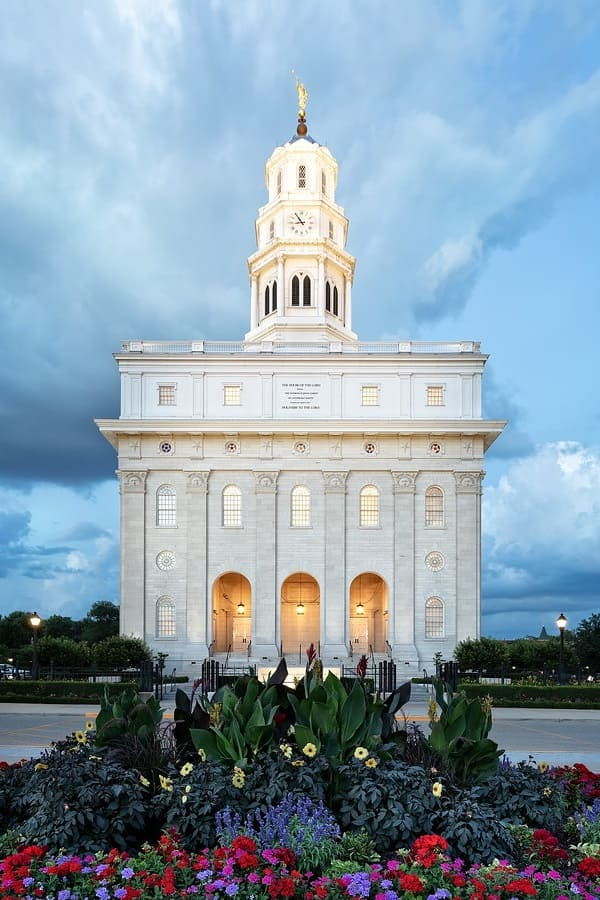

Logan, Temple
Logan, Utah Temple
- 175 North 300 East Logan, Utah 84321-4720
- (+1) 435-752-3611
- Clothing rental available.
- Cafeteria food served.
- NO patron housing available.
- No distribution center nearby (Store Locator).
- Announcement: 6 October 1876.
- Site Dedication: 18 May 1877 by Orson Pratt.
- Groundbreaking: 18 May 1877 by John W. Young.
- Dedication: 17–19 May 1884 by John Taylor.
- Rededication: 13–15 March 1979 by Spencer W. Kimball.
- 17 May 1884
- 13 March 1979
- ChurchOfJesusChrist.org
Address
Telephone
Services
Closure
2020
January
February
April
July
August
October
November
December
History
Dedicatory Prayer
More facts at:
Local Weather
WeatherJordan River
Jordan River, Temple
- 10200 South 1300 West South Jordan, Utah 84095-8814
- (+1) 801-254-3003
- Clothing rental available
- Cafeteria food served
- NO patron housing available
- No distribution center nearby (Store Locator)
- Announcement: 3 February 1978.
- Groundbreaking and Site Dedication: 9 June 1979 by Spencer W. Kimball
- Dedication: 16–20 November 1981 by Marion G. Romney
- Rededication: 20 May 2018 by Henry B. Eyring
- 16 November 1981
- 13 March 1979 (Not Available)
- ChurchOfJesusChrist.org
Address
Telephone
Services
Closure
2020
January
April
June
July
October
November
December
History
Dedicatory Prayer
More facts at:
Local Weather
WeatherSão Paulo, Temple
São Paulo, Temple
- Avenida Professor Francisco Morato, 2390 Caxingui - 05512-900–São Paulo–São Paulo - Brazil
- (+55) 11-3723-7600
- Clothing rental available
- Cafeteria food served
- NO patron housing available
- Distribution center nearby (Store Locator)
- Announcement: 1 March 1975.
- Groundbreaking and Site Dedication: 20 March 1976 by James E. Faust/
- Dedication: 30 October–2 November 1978 by Spencer W. Kimball.
- Rededication: 22 February 2004 by Gordon B. Hinckley.
- 30 October 1978
- 22 February 2004
- ChurchOfJesusChrist.org
Address
Telephone
Services
Closure
2020
January
April
August
October
December
History
Dedicatory Prayer
More facts at:
Local Weather
WeatherNauvoo, Temple
Nauvoo, Illinois Temple
- 50 North Wells Street Nauvoo, Illinois 62354
- (+1) 217-453-6252
- Clothing rental available.
- No Cafeteria food served.
- NO patron housing available.
- No distribution center nearby (Store Locator).
- Announcement: 4 April 1999.
- Groundbreaking and Site Dedication: 24 October 1999 by Gordon B. Hinckley
- Dedication: 27–30 June 2002 by Gordon B. Hinckley
- 27 June 2002
- ChurchOfJesusChrist.org